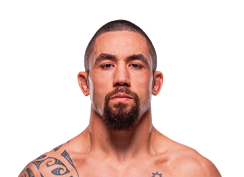

Robert Whittaker es un peleador australiano de artes marciales mixtas conocido por su estilo técnico y su gran inteligencia dentro del octágono. Nació el 20 de diciembre de 1990 en Nueva Zelanda, pero representa a Australia.
Whittaker se hizo conocido dentro de la UFC gracias a su striking preciso, su excelente defensa de derribos y su gran resistencia durante los combates.
A lo largo de su carrera logró convertirse en campeón de peso medio de la UFC, derrotando a algunos de los mejores peleadores de su división.
Su estilo combina velocidad, movimiento constante y golpes muy bien calculados, lo que lo convierte en uno de los peleadores más técnicos de su categoría.
Peso medio (185 lb / 84 kg)
Más de 20 victorias en artes marciales mixtas y ex campeón de peso medio de la UFC.